Application web en PHP qui exploite l'API publique de TheMovieDB pour afficher des films, leurs détails, les acteurs associés et permettre une recherche par titre ou par genre.
Ce projet consomme l'API TMDB pour construire un mini site de films en PHP. L'objectif était de manipuler une API externe, structurer les requêtes dans des fonctions réutilisables, et afficher les résultats de façon claire.
topRated).filmParGenre.movieDetails.php) qui récupère l'identifiant du film dans l'URL et affiche ses informations, avec le casting sous forme de cartes défilantes horizontalement.actorDetails.php) affichant ses informations et une sélection de ses films principaux, chacun cliquable vers sa propre fiche.searchMovies.php ou searchActors.php selon le type de recherche.global.css dédié.Manipuler une API REST externe en PHP avec file_get_contents, structurer le code en fonctions réutilisables, passer des paramètres via l'URL ($_GET), et gérer l'affichage conditionnel de données (acteurs sans photo, trailer manquant, etc.).
Après avoir installé WAMP, je mets le code lié au proxy en commentaire et le remplace par une requête directe avec file_get_contents.
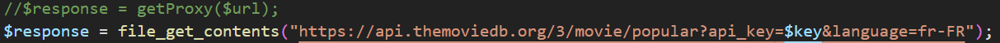
Ajout de la fonction topRated dans fonctions.php, permettant de récupérer les films les mieux notés via l'API TMDB et de retourner les résultats sous forme de tableau.
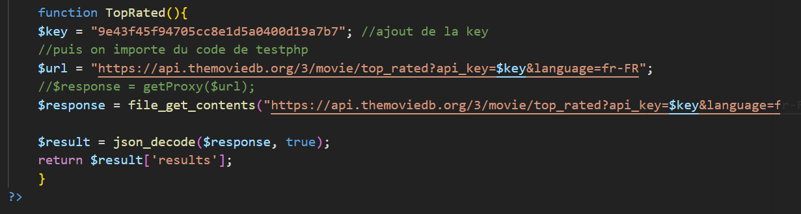
Création du fichier TopRated.php qui utilise cette fonction afin d'afficher les films les mieux notés.
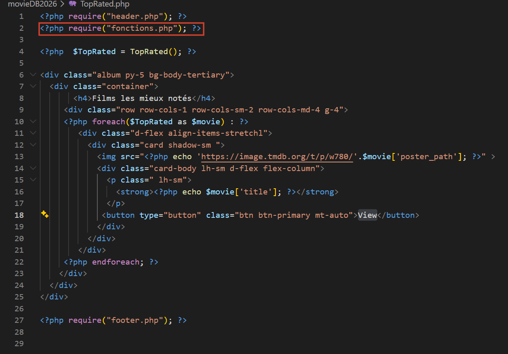
Modification du pointage du fichier TopRated.php :
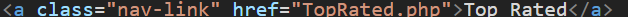
On ajoute tous les genres dans le menu, chacun associé à son identifiant fourni dans l'énoncé, afin de pouvoir filtrer les films par catégorie.
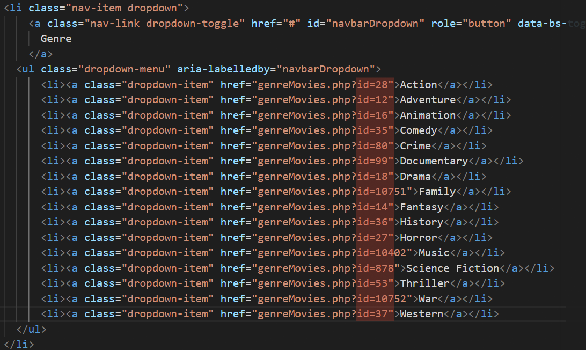
Création de la page genreMovies.php qui récupère l'id dans l'URL, vérifie qu'il existe, puis l'utilise pour appeler une fonction qui retourne les films correspondant au genre choisi.
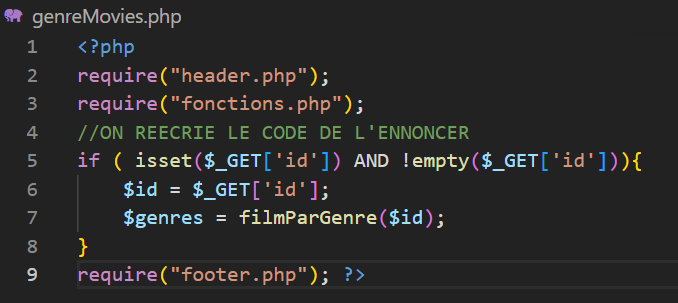
Ajout de l'affichage des films : on parcourt le tableau et on affiche les informations principales pour chaque film.
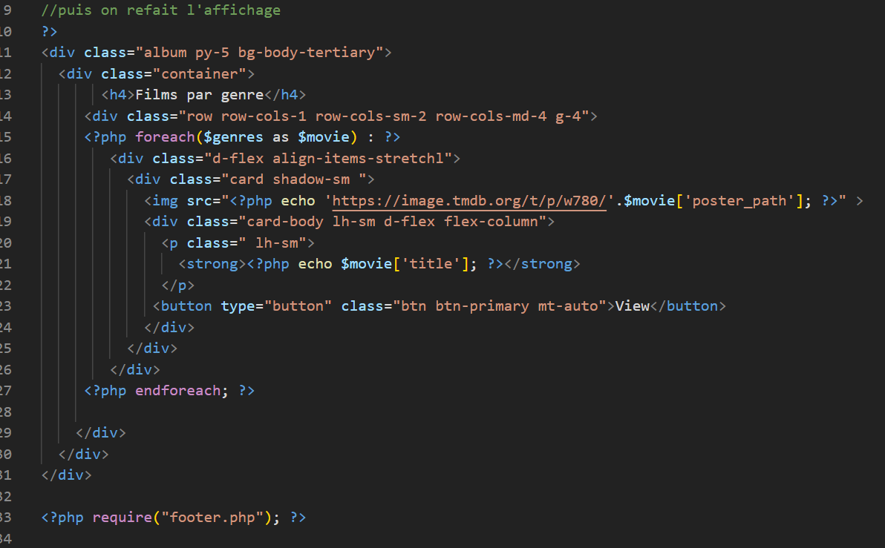
Création de la fonction filmParGenre dans fonctions.php : elle prend en paramètre l'id du genre et effectue une requête vers l'API TMDB pour récupérer les films associés à ce genre.
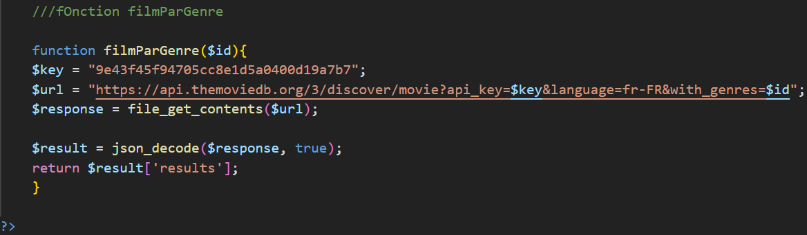
Détail des films : on utilise un lien <a> pour que le clic redirige vers une autre page. L'identifiant du film est transmis dans l'URL puis récupéré avec $_GET['movieId'] dans movieDetails.php.
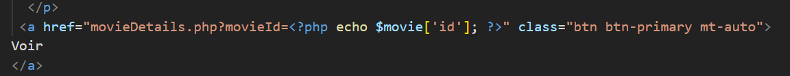
La page movieDetails.php affiche les informations d'un film quand on clique sur « Voir » : elle récupère l'id du film dans l'URL puis l'utilise pour aller chercher les données via l'API. Aperçu :
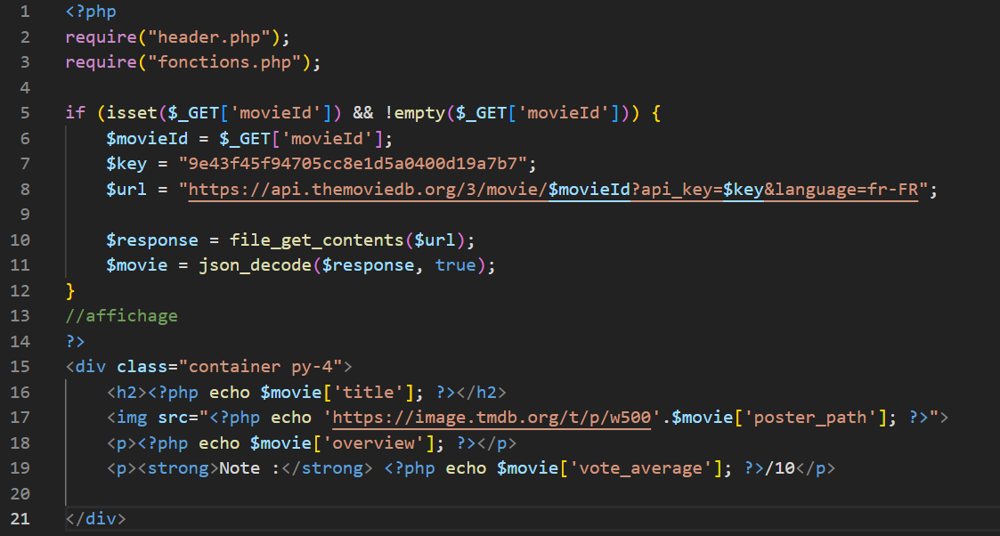
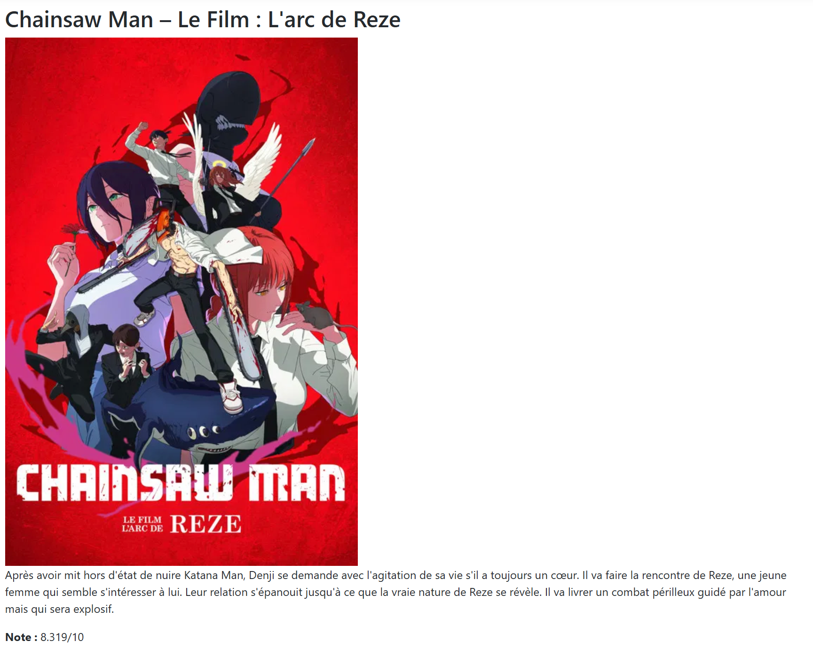
Cette partie affiche les acteurs du film sous forme de cartes avec leur photo et leur nom. On vérifie d'abord que la liste existe, puis on parcourt chaque acteur en n'affichant que ceux qui ont une image. Les acteurs sont présentés dans une ligne défilante horizontalement. Pour le style, je me suis aidé de tutoriels afin d'obtenir un rendu propre et lisible.
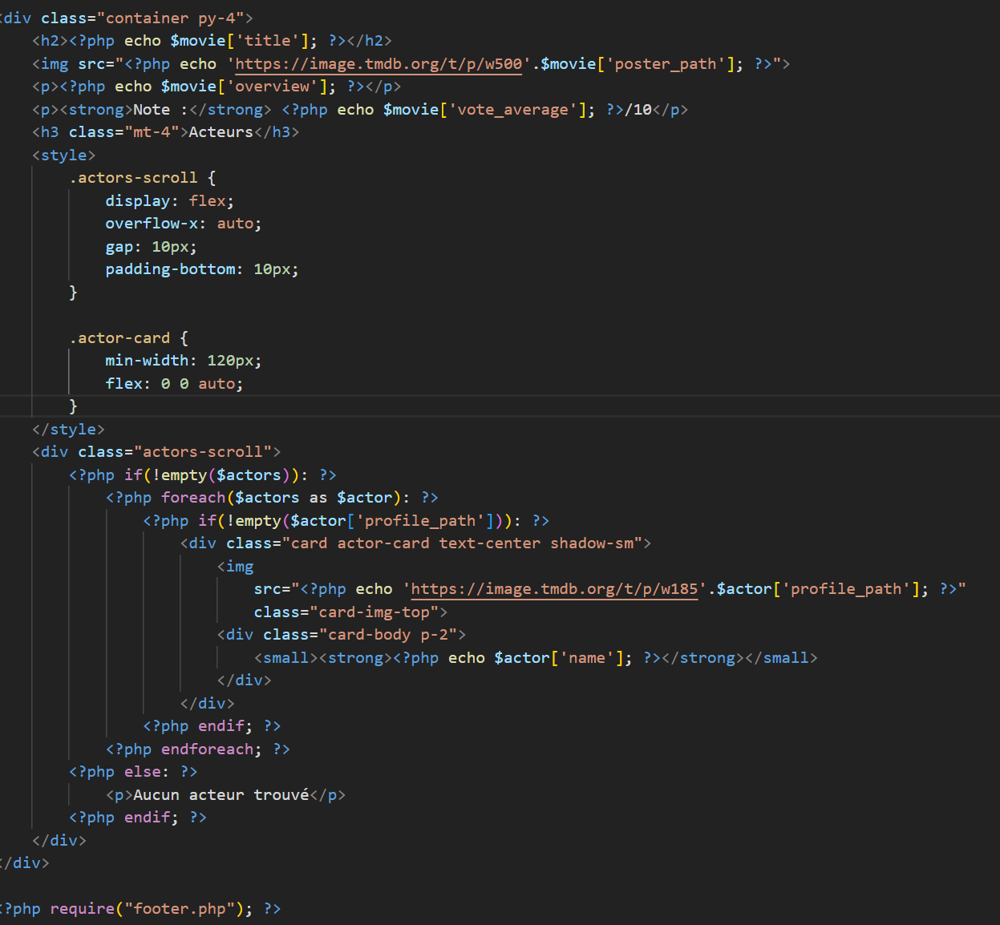
Création de actorDetails.php permettant d'afficher les informations d'un acteur ainsi que ses principaux films. La page récupère les données via l'API en utilisant l'id de l'acteur présent dans l'URL, puis affiche uniquement une sélection des films les plus importants.
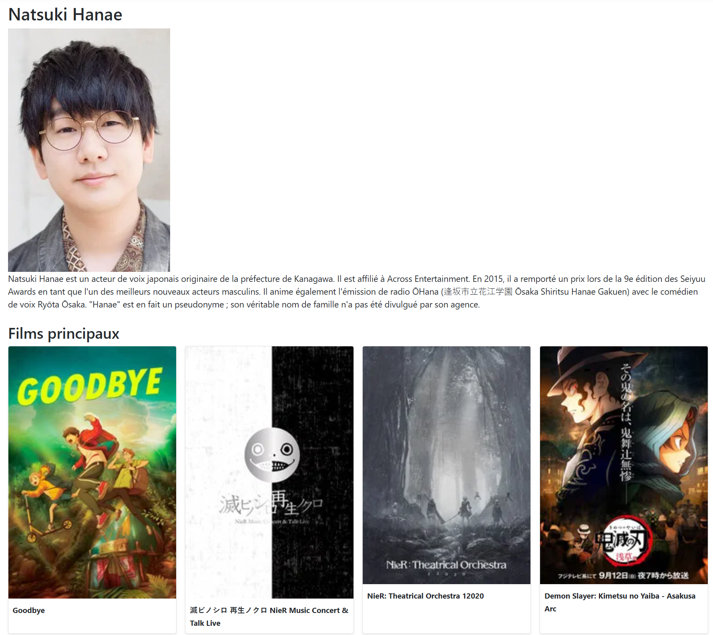
Après quelques tests, je me suis rendu compte que les films affichés dans la fiche d'un acteur n'étaient pas cliquables. J'ai donc modifié le code en ajoutant un lien sur chaque film afin de rediriger vers la page de détail du film en passant son identifiant dans l'URL.
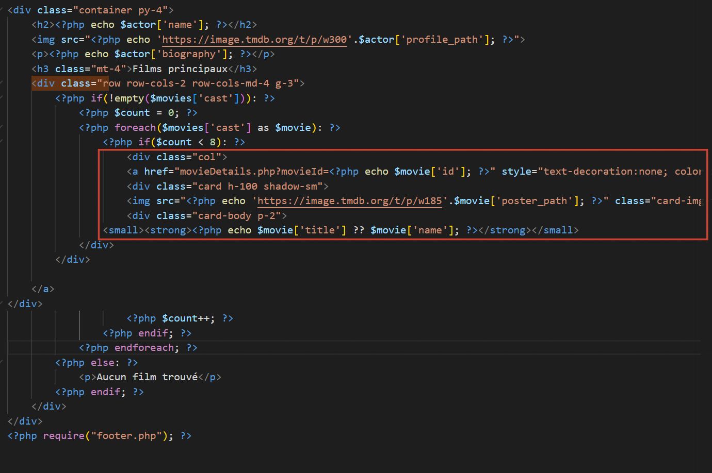
Barre de recherche : dans header.php, en remplaçant action="#" par searchActors.php et searchMovies.php afin d'envoyer les recherches vers les bonnes pages. Création des fichiers correspondants pour traiter la recherche via l'API et afficher les résultats.
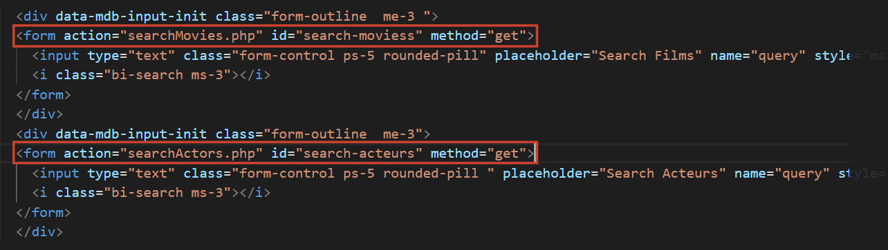
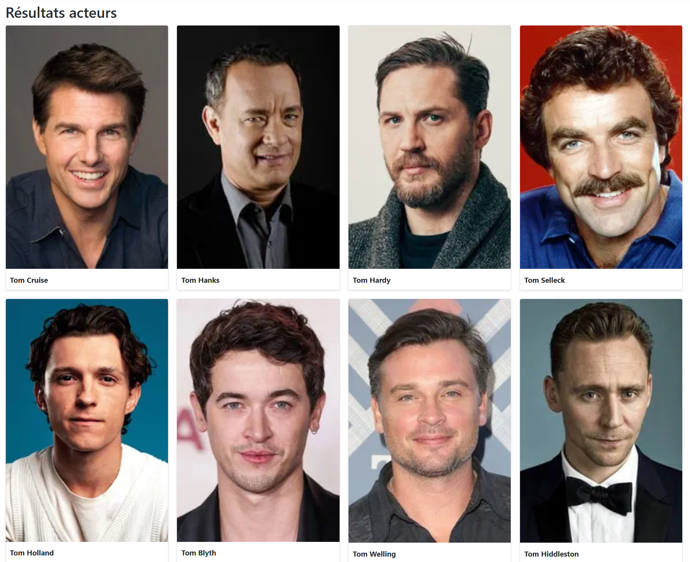
Test réalisé avec le mot « tom » :
Ajout d'une section « bandes-annonces » sur la page de détail des films. Les vidéos sont récupérées via l'API TMDB et affichées sous forme d'iframe YouTube. Le système permet d'afficher une bande-annonce en VO et une en VF lorsqu'elles sont disponibles, sinon une seule vidéo est affichée.
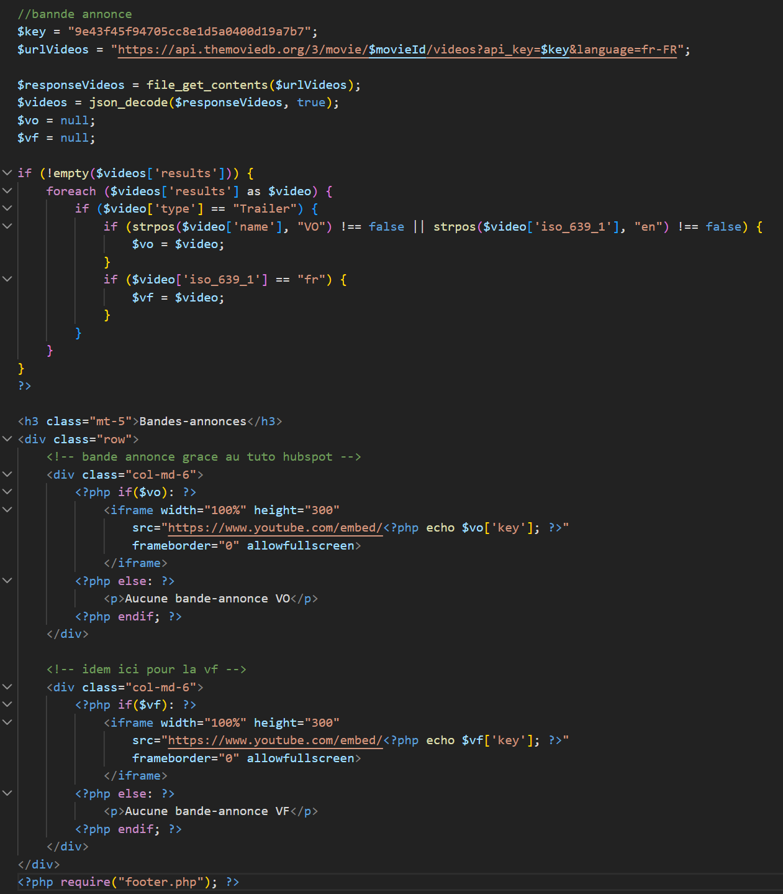
Ajout de balises <style> et création d'un fichier global.css afin d'assombrir l'ensemble du thème du site.
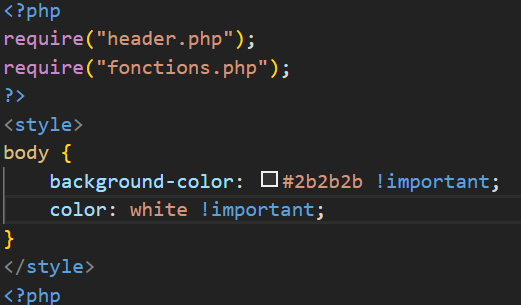
Résultat final :
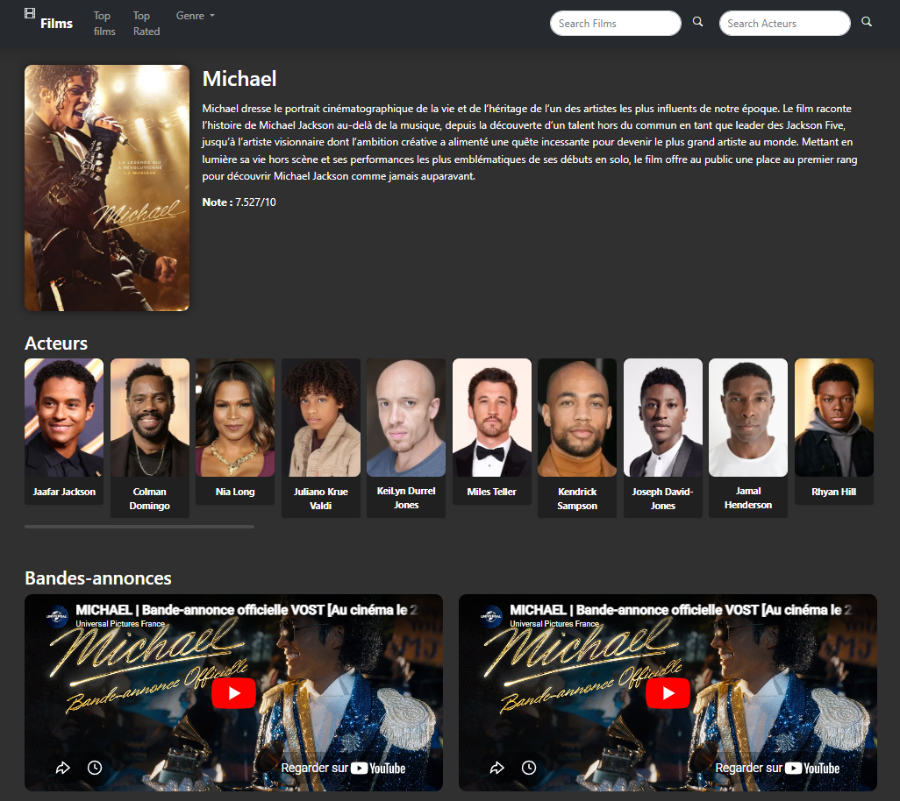